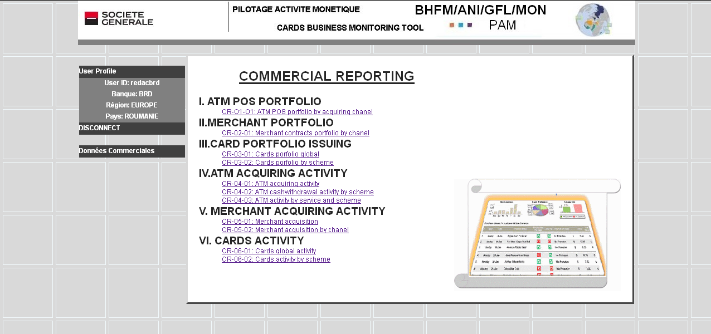
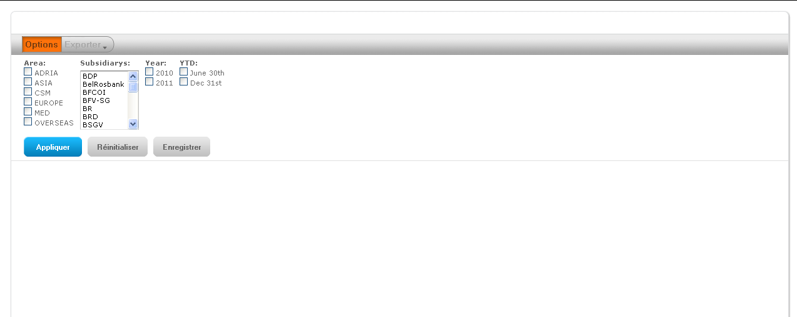
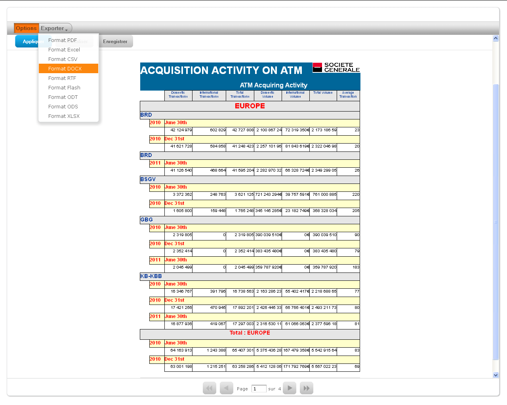
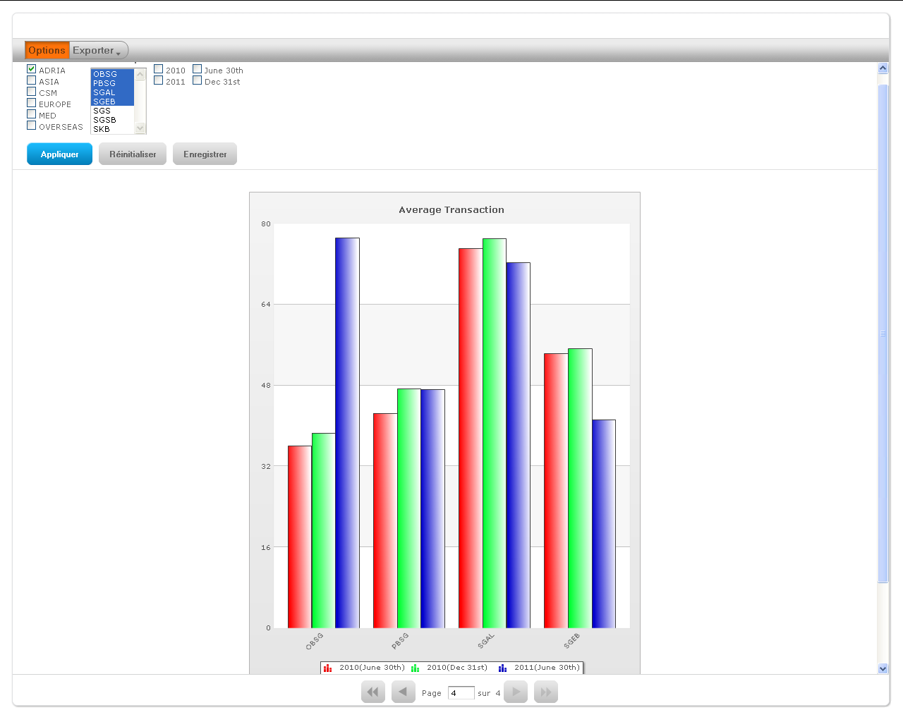

Tables des matières Fermer la fenêtre
Les rapports monétiques sont accessibles en cliquant sur le libellé « Reporting » du menu. Les rapports sont créés et générés avec le logiciel JASPER version V4.1
Tous les tableaux et graphiques générés sont à la disposition de chaque utilisateur de l’application. Donc, chaque filiale peut prendre connaissance des rapports des autres filiales de sa région, mais également de celles des autres régions.

Tous les rapports peuvent être exportés sous forme de fichiers PDF, XLS, DOC, etc.
A ce jour l’application offre une liste de rapports générés automatiquement à partir des données contenues dans les tables de données commerciales. Ces rapports sont composés de tableaux et de graphiques. Lorsqu’un utilisateur clique sur un des titres listés dans cet écran, le rapport correspondant est généré à nouveau.
Ces rapports sont paramétrables. Vous trouverez en tête de page sous le bouton OPTIONS des cases à cocher ou des listes déroulantes permettant de choisir des valeurs de sélection des données à faire apparaître dans le rapport. Lorsqu’un utilisateur clique sur un des titres listés dans cet écran l’application affiche un écran doté de sélecteur de valeurs de champs.
Exemple :

et du message suivant :
L’utilisateur doit sélectionner soit en cliquant sur de case à cocher soit en sélectionnant une ou des filiales, un trimestre, … dans des listes déroulantes, les données qu’il souhaite voir apparaître dans le tableau et les graphiques associés. Le rapport correspondant est généré à chaque demande.
Exemple du Rapport CR-04-01 concernant l’activité d’acquisition sur les DAB dans la région Europe, les filiales BRD, BSGV, GBG et KB pour les 2 semestres de 2010 et le premier semestre 2011 :

Ces données sont triées dans un tableau par région, filiale et semestre.
L’utilisateur a la possibilité de combiner les critères disponibles : région, filiale, chanel, …., année et semestre suivant le contenu du rapport. La liste des filiales étant dépendante de la région choisie.
Toute modification dans les valeurs d’une table engendre immédiatement une modification dans les rapports utilisant ces valeurs. Il est donc possible après une mise à jour dans une table de données d’en vérifier les incidences dans le reporting en particulier sur les graphiques associés.
Exemple de graphique associé à ce type de tableau :
